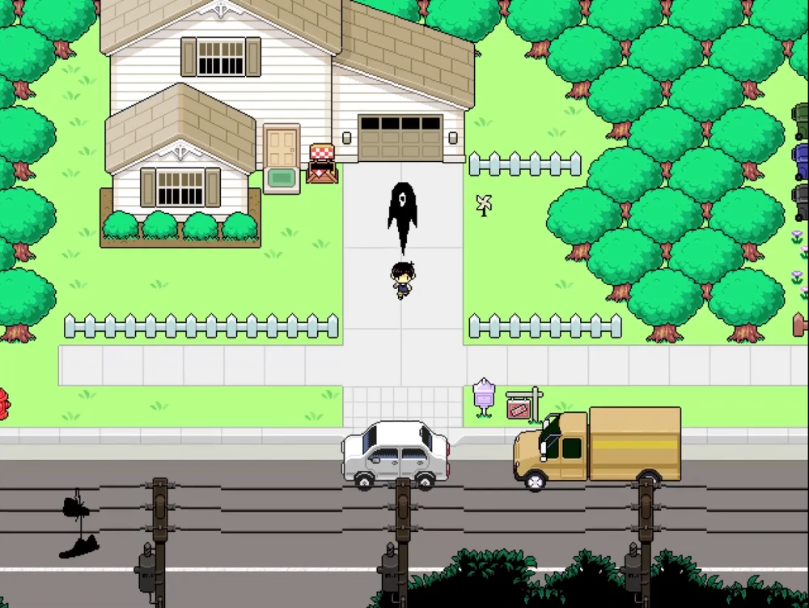
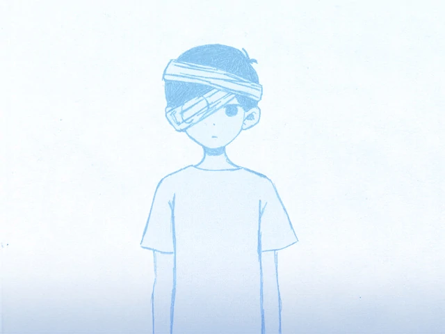
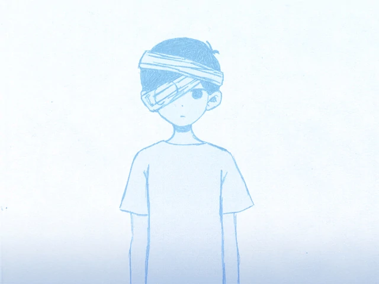

FINAIS DO JOGO
OMORI tem duas rotas completas com quatro finais conhecidos, com pequenas variações dependendo da rota.
É melhor ver esta página depois de completar o jogo pela primeira vez.
| Conteúdo |
|---|
VISÃO GERAL
A ROTA de SUNNY é o caminho principal do jogo. O percurso tem efeito respondendo a todas as batidas na porta da casa de SUNNY e participando nos segmentos de jogo na Cidade. 2 finais possíveis podem ser alcançados nesta rota, com ligeiras variações em cada um dependendo de escolhas menores.
A ROTA OMORI é a rota alternativa onde SUNNY decide não responder à batida de KEL, o que o leva a se tornar mais hikikomori do que antes. Em vez disso, ele fará as tarefas dadas por sua mãe enquanto continua a lidar com ALGUMA COISA. Esta rota expande notavelmente o Mundo Imaginário, mas não oferece uma conclusão adequada para a história, já que SUNNY não é capaz de explorar a Cidade e se reconectar com seus antigos amigos.
ROTA DE SUNNY
Se SUNNY optar por abrir a porta para KEL em todos os dias, isso o levará para a ROTA SUNNY, também conhecida como ROTA VERDADEIRA nos dados do jogo.
Nesse percurso, a história gira principalmente em torno de SUNNY decidir enfrentar a realidade depois de passar quatro anos como um hikikomori antes de se mudar em quatro dias. A maior parte da história se passa em FARAWAY TOWN.
Junto com isso, ele tenta se reconectar com seus ex-amigos enquanto tenta descobrir a verdade por trás da morte de MARI, o que fez com que o grupo de amigos se separasse no passado.
Observe que, uma vez que o jogador está nesta rota, a história irá divergir dos segmentos do Mundo Imaginário e se tornar mais focada na jornada de SUNNY para seguir em frente.
Os finais da Rota Sunny podem ser alcançados lutando contra BASIL em seu quarto depois de acordar na casa de BASIL. Depois da luta de SUNNY e BASIL, ambos são nocauteados e enviados para o hospital. Enquanto inconsciente, SUNNY encontra OMORI no ESPAÇO BRANCO e luta com ele pelo controle pela última vez.
É impossível vencer a luta contra OMORI. No entanto, após OMORI conseguir dominar SUNNY, isso resultará em uma tela única de game over, permitindo ao jogador continuar ou não.
Final bom
Se o jogador optar por continuar após morrer, a luta com OMORI continuará. Os ataques de SUNNY serão substituídos pela opção PLAY, permitindo que SUNNY faça seu dueto com MARI, que estava planejado para ser realizado no recital do dia de sua morte. Após a apresentação, OMORI perde a batalha pelo controle da mente de SUNNY e desaparece.
SUNNY então acorda no hospital e começa a chorar, antes de se levantar em um quarto cercado por várias flores entregues pelos habitantes da cidade. Saindo da sala, SUNNY aparece com aparições fantasmagóricas de ambas as variantes de seus amigos do Mundo Imaginário e a sombra de BASIL indo em direções opostas a eles.
Perseguir seus amigos leva a uma janela, na qual interagir com ele leva SUNNY a balançar a cabeça, sugerindo que ele não quer cometer suicídio.
Perseguir a sombra de BASIL leva você ao quarto dele. SUNNY está na porta antes de BASIL e seus amigos, finalmente sendo capaz de dizer a eles a verdade. Os créditos rolam como uma visão da paisagem correndo do carro de SUNNY é sobreposta por letras.
Final secreto
Se o jogador fez o esforço de regar as flores da BASIL consistentemente durante cada dia no Mundo Imaginário, uma cena adicional é adicionada após os créditos.
BASIL acorda e encontra SUNNY olhando para ele. Os dois meninos olham um para o outro e sorriem enquanto suas ALGUMA COISA desaparecem, mostrando que, independentemente de como todos os outros reagiram, o fardo que eles carregaram por quatro anos foi removido e eles estão prontos para seguir em frente.
Final ruim
Se o jogador escolher não continuar depois de morrer, OMORI vai ganhar o controle da mente de SUNNY. A partir daí, OMORI acorda no ESPAÇO BRANCO mais uma vez. Quando ele entra no QUARTO DO VIZINHO para se reunir com seus amigos, todos eles parecem estranhamente silenciosos.
No entanto, ao invés de partir para o Mundo Imaginário para outra aventura, OMORI se encontra no corpo de SUNNY, parado na varanda do hospital. Incapaz de aceitar a verdade, a única opção é pular, levando SUNNY a cair do prédio e despencar para sua morte presumida enquanto os créditos são reproduzidos.
FINAIS NEUTROS
Os finais neutros só podem ser alcançadas escolhendo dormir depois que SUNNY despertar na casa de BASIL. Depois de dormir, SUNNY entrará no ESPAÇO BRANCO como OMORI. A porta do QUARTO DO VIZINHO não aparecerá, e a única forma de sair do ESPAÇO BRANCO é através da opção STAB. BASIL sempre morrerá nas terminações Neutras.
Embora não afete os finais, se SUNNY voltar a dormir na casa de BASIL, ele vai acordar mais uma vez para encontrar seus amigos e POLLY no corredor, perturbados com o suicídio de BASIL. Abrindo a porta de BASIL revela seu cadáver caído contra a parede com um grande buraco em seu abdômen representado por ALGUMA COISA.
A única opção será voltar para casa. Ao fazer isso, uma versão sangrenta e mutilada de SUNNY fica no topo da escada. Entrar no quarto de SUNNY revela uma marca preta sobre a cama. O resto do jogo será executado dependendo se SUNNY pegar a faca ou não antes de dormir.
Final de abandono
Se SUNNY decidir voltar a dormir em sua própria cama, isso levará a uma repetição da cena de introdução do Espaço Branco desde o início do jogo. OMORI aparece no Espaço Branco normalmente, mas não há porta para o Mundo Imaginário além da lâmpada estar faltando.
Tudo o que OMORI pode fazer é se esfaquear para acordar SUNNY. SUNNY silenciosamente encontra sua mãe em seu carro enquanto ALGUMA COISA o segue, deixando seus amigos perturbados para trás sem respostas. Sirenes da polícia tocam durante os créditos.
Final da faca
Se SUNNY pegar a faca no balcão da cozinha antes de ir para a cama, usar a opção STAB em ESPAÇO BRANCO como OMORI fará com que os efeitos resultantes afetem o corpo físico de SUNNY.
A secretária eletrônica de SUNNY toca continuamente enquanto ele está deitado na cama, segurando uma faca contra o peito sangrando.
O toque de um telefone que nunca mais será atendido joga sobre os créditos. Um final alternativo de faca ocorre se você escolher esfaquear depois de acordar no dia da mudança.
ROTA DE OMORI
A ROTA OMORI, também conhecida como ROTA HIKIKOMORI, é um caminho alternativo desbloqueado ao se recusar a responder a qualquer um dos convites de KEL para sair no mundo real. Ignore as batidas na porta e mande SUNNY de volta para a cama. SUNNY vai tirar uma soneca, avançando parcialmente o dia, e as missões da Cidade a partir deste ponto serão substituídos por SUNNY fazendo suas tarefas na lista de tarefas para avançar o enredo. Ele se recusará a sair de casa daqui em diante.
SUNNY ainda será forçado a enfrentar e superar seus medos, embora as alucinações se manifestem mais abruptamente do que na rota SUNNY. Sunny desmaia e se depara com o confronto com ALGUMA COISA nas paredes quando sobram TRÊS DIAS, e no dia seguinte toma banho, adormece e se submerge na banheira para enfrentar ALGO NA ÁGUA.
As missões do Mundo Imaginário permanecem praticamente inalterados desde a ROTA SUNNY até faltarem dois dias. KEL é quem cumprimenta OMORI no cais e o guia para LAST RESORT em vez de MARI, e a viagem para DEEP WELL é muito mais curta porque OMORI não se guia pelo espírito de MARI.
Quando OMORI chega à IGREJA no final do ESPAÇO NEGRO, ele salva BASIL enquanto o ESTRANGER o repreende por fugir da verdade mais uma vez.
SUNNY é puxado para o ESPAÇO NEGRO e o STRANGER o força a uma luta, e depois de uma luta inútil, SUNNY sucumbe ao desespero e luta pelo ESPAÇO VERMELHO, onde OMORI desce de seu trono e "salva" SUNNY de sua angústia. O ESTRANGER desiste e OMORI agarra BASIL e os dois escapam com a ajuda de uma MÃO. Eles sobem do ESPAÇO NEGRO para o QUARTO DO VIZINHO, e OMORI vai dormir para reiniciar sua aventura.

OMORI assume SUNNY quando começa seu último dia cumprindo a última de suas tarefas antes do DIA DA MUDANÇA, sendo silenciosamente atormentado por ALGUMA COISA o tempo todo. Se você decidir se esfaquear durante este tempo, uma variação do final da faca será reproduzida.
Assim que você começa o penúltimo dia no Mundo IMAGINÁRIO reconstruído, OMORI se reúne com seus amigos. Eles repetem o mesmo diálogo desde o início do jogo, e OMORI segue para o PLAYGROUND vazio para cumprimentar MARI e BASIL. Desta vez, BASIL permanece na santidade da toalha de piquenique de MARI, a salvo de descobrir o ESPAÇO NEGRO novamente.
Deste ponto em diante, todo o Mundo Imaginário é seu para explorar como quiser. Você pode revisitar áreas para encontrar novas coisas para fazer, novas missões secundárias para completar, novos chefes para enfrentar e novos equipamentos para o grupo. SNOWGLOBE MOUNTAIN e THE ABYSS são exclusivos desta rota, e se você conquistar todas as três COISAS baseadas na fobia, você poderá explorar o ESPAÇO NEGRO 2.
Para finalizar a rota, apunhale enquanto estiver no ESPAÇO BRANCO para despertar na casa de SUNNY. Você pode voltar para a sua cama e escolher dormir até o DIA DA MUDANÇA. Apenas as terminações neutras estão disponíveis para você aqui.
 
